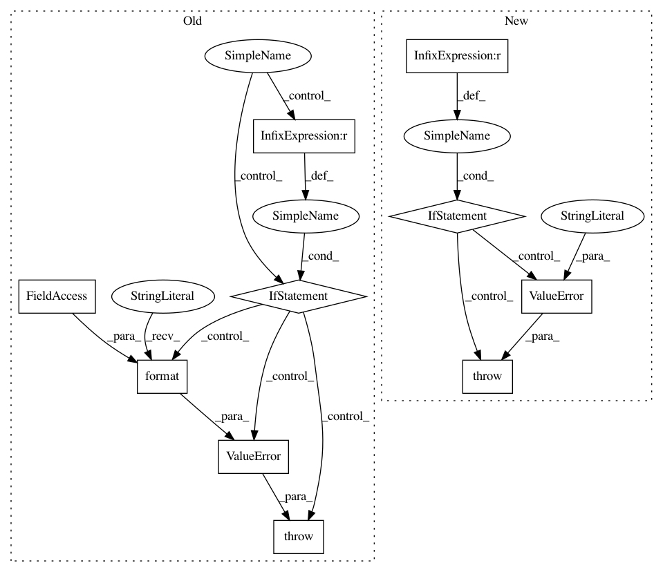

145170ca9bbd89aa01d8a40841e3c039d3683af8,stellargraph/layer/graph_attention.py,GraphAttention,call,#GraphAttention#Any#,211
Before Change
if kwargs.get("add_self_loops", False):
// get the number of nodes from inputs[1] directly
N = K.int_shape(inputs[1])[-1]
if N is not None:
// create self-loops
A = tf.linalg.set_diag(A, K.cast(np.ones((N,)), dtype="float"))
else:
raise ValueError(
"{}: need to know number of nodes to add self-loops; obtained None instead".format(
type(self).__name__
)
)
outputs = []
for head in range(self.attn_heads):
kernel = self.kernels[head] // W in the paper (F x F")
attention_kernel = self.attn_kernels[
After Change
print(">>", X.shape, A.shape, out_indices.shape)
batch_dim, n_nodes, _ = K.int_shape(X)
if batch_dim != 1:
raise ValueError(
"Currently full-batch methods only support a batch dimension of one"
)
// Remove singleton batch dimension
A = K.squeeze(A, 0)
X = K.squeeze(X, 0)
out_indices = K.squeeze(out_indices, 0)
In pattern: SUPERPATTERN
Frequency: 3
Non-data size: 10
Instances
Project Name: stellargraph/stellargraph
Commit Name: 145170ca9bbd89aa01d8a40841e3c039d3683af8
Time: 2019-06-03
Author: andrew.docherty@data61.csiro.au
File Name: stellargraph/layer/graph_attention.py
Class Name: GraphAttention
Method Name: call
Project Name: asyml/texar
Commit Name: 4a9836127987a39832d1a6f9da7e0cc925423d50
Time: 2018-07-31
Author: zhiting.hu@petuum.com
File Name: texar/models/seq2seq/seq2seq_base.py
Class Name: Seq2seqBase
Method Name: __init__
Project Name: dask/dask-ml
Commit Name: 68c9bab4a5c6821c2a4395763c676ba796406c49
Time: 2020-08-17
Author: TomAugspurger@users.noreply.github.com
File Name: dask_ml/preprocessing/_encoders.py
Class Name: OneHotEncoder
Method Name: _transform